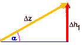
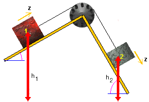
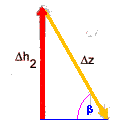

  
The two triangles above illustrate the changes Dh1, Dh2, and Dz. The arrows indicate the directions in which h1, h2, and z increase, not the directions in which these quantities actually change in the present motion.
The diagram above shows that
There has to be a minus sign in the second equation because h2 decreases as z increases. Notice the opposite sense of the arrows for Dh2 and Dz in the second triangle.
Substituting these expressions into the equation derived on the last page,
dividing by Dz and factoring out g, gives the following equation for az: